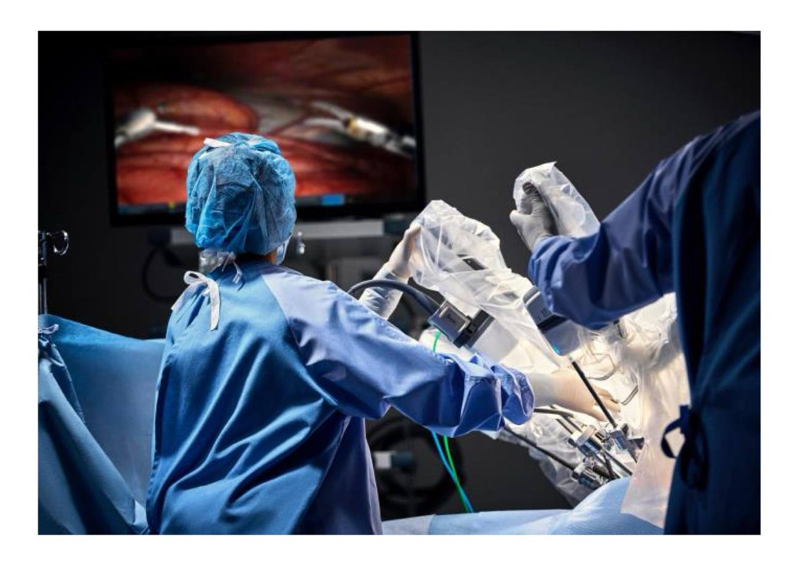
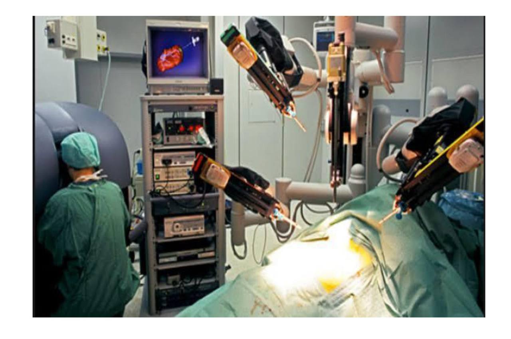
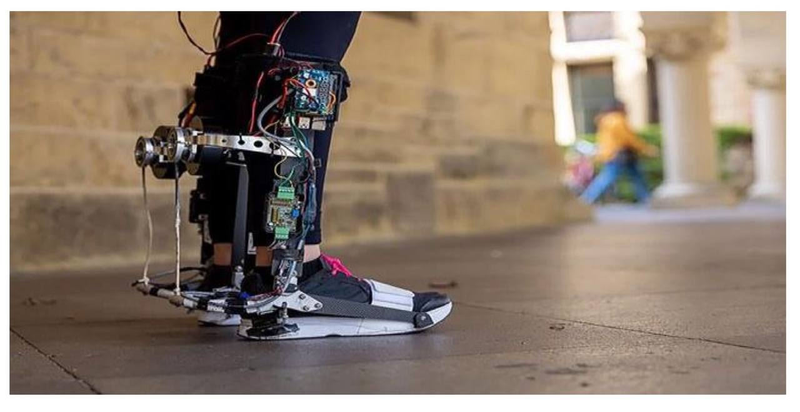

الجراحة الروبوتية عن بعد

يقوم الجراحون بتشغيل الروبوت عن بعد من وحدة
التحكم، والتي تترجم حركات أيديهم إلى حركات أصغر
وأكثر دقة لأدوات صغيرة داخل جسم المريض، بإجراء
عمليات جراحية معقدة بدقة متزايدة من خلال نهج طفيف،
مثل نظام الجراحة الدافنشي.
الجراحة الروبوتية المستقلة

يستكشف الباحثون الأنظمة التي يمكنها أداء مهام جراحية معينة بمفردها
بالكامل تحت إشراف الجراح. لهذه الأنظمة، يمكن تحسين اتساق العمليات
الجراحية ونتائجها من خلال تنفيذ مهام متكررة أو دقيقة للغاية، مثل الخياطة
أو تشريح الأنسجة.
الأطراف الصناعية والهياكل الخارجية الروبوتية

يمكن للروبوتات المساعدة في إنشاء أطراف صناعية وهياكل
خارجية متقدمة، يمكن استخدامها أثناء إعادة التأهيل لمساعدة
المرضى على استعادة الحركة والقوة بعد الجراحة.